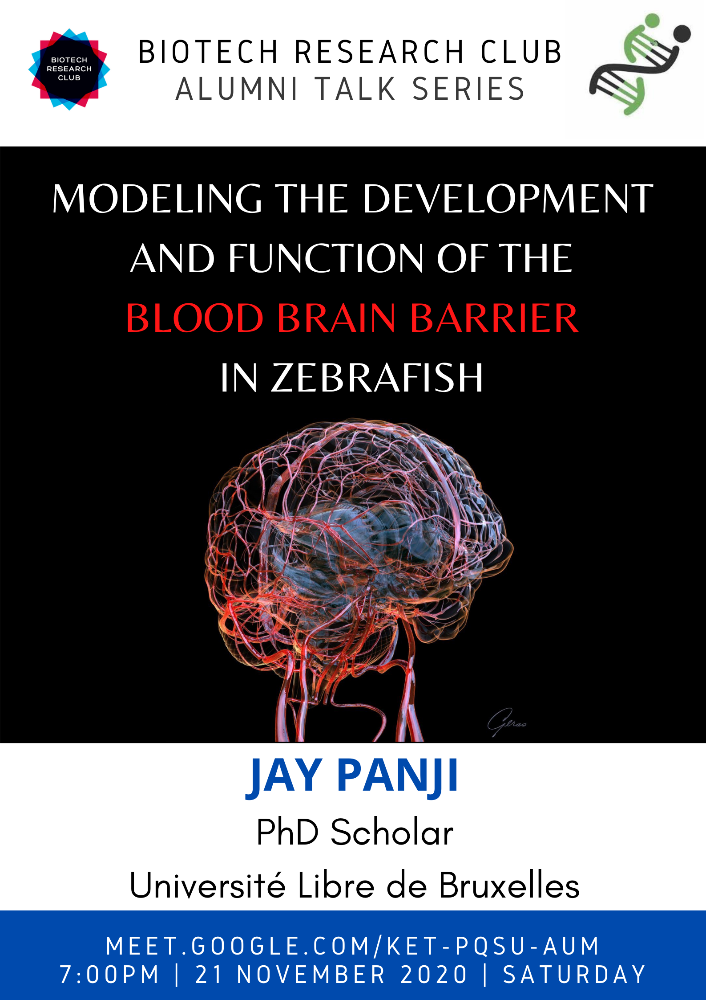

Modeling the development and function of the blood-brain barrier in zebrafish.
Abstract
Blood vessels are more than passive conduits for blood flow. Tissue-specific vascular beds not only match the metabolic demands of the perfused organs but also act as important signalling centres releasing angiocrine factors that govern tissue morphogenesis and function. Proper brain function relies on elaborate neurovascular communications that, when perturbed, often have disabling or fatal consequences. Hence, there is great interest in studying the mechanisms that shape the anatomy and control the functionality of the cerebrovasculature, not only to better understand how the brain develops and works, but also to elaborate innovative therapeutic strategies for neurological disorders. Neurovascular biology is a relatively young field and an integrated model of how, when and to what extent neural and vascular development are coordinated is currently lacking. Building this model will greatly benefit from the combined capacity to (i) scrutinize the cellular modalities of the highly dynamic processes of neurovascular development in real-time and to (ii) identify experimental settings where the signalling and circulatory functions of the blood vessels can, at least partially, be uncoupled.
Biography of the speaker
Jay Panji is currently a first-year PhD candidate at the Université Libre de Bruxelles in Brussels, Belgium. His research interests lie in understanding the mechanisms involved in blood-brain barrier formation and how they are perturbed in neurodegenerative disorders. He is currently working on developing a zebrafish model of the blood-brain barrier.
General discussion session for students to interact with the speaker